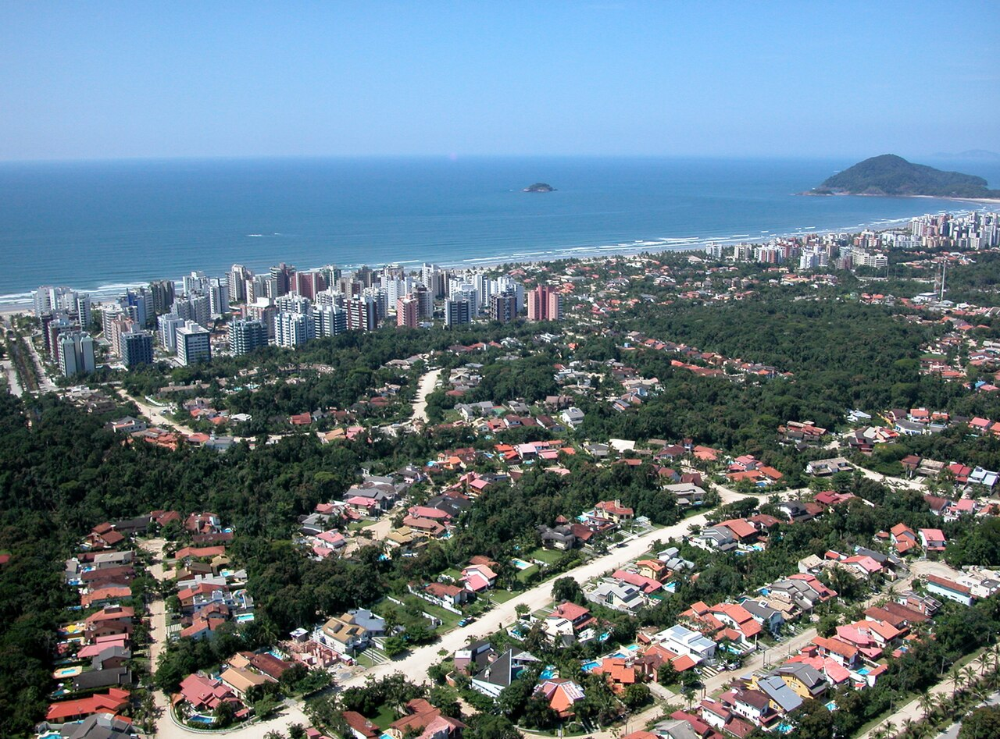

Bertioga é um município do estado de São Paulo, na Região Metropolitana da Baixada Santista, microrregião de Santos. A população aferida pelo IBGE no censo de 2022 foi 64 188 habitantes, contra os 47 645 habitantes contados no censo de 2010. A área do município é de 491,546 km.

Principais Aspectos de Bertioga:
Bertioga é um dos quinze municípios paulistas considerados estâncias balneárias pelo Estado de São Paulo, por cumprirem determinados pré-requisitos definidos por Lei Estadual. Tal status garante a esses municípios uma verba maior por parte do Estado para a promoção do turismo regional. Também, o município adquire o direito de agregar junto a seu nome o título de Estância Balneária, termo pelo qual passa a ser designado tanto pelo expediente municipal oficial quanto pelas referências estaduais.[8] Bertioga possui 33 km de praias próprias para o banho, que oferecem momentos de lazer e a prática de diversos esportes, já que possui excelente condições de balneabilidade. As praias se dividem em Enseada, São Lourenço, Itaguaré, Guaratuba e Boraceia
Voltar pra página principal:
Página principal